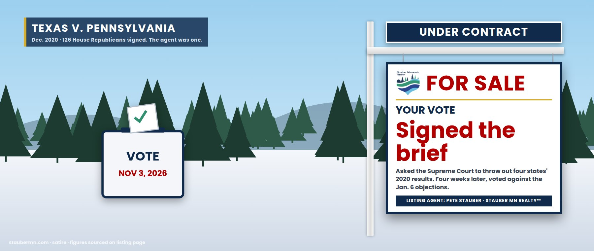

The Ballot Box Gated Community — Minnesota’s Elections, Membership Review Pending
Every precinct in Minnesota · HOA: U.S. Department of Justice · Listing agent: Rep. Pete Stauber
Membership review pending
Welcome to the most sought-after electorate in America. Minnesota turned out 76.35% of eligible voters in 2024 — second in the nation, a hair behind Wisconsin — against a national rate of about 64%. Its signature amenity is same-day registration, in place since 1974: show up, prove who you are and where you live, and vote.
The homeowners’ association has concerns. In 2025 the Justice Department demanded voter rolls from more than 40 states, including names, addresses, driver’s license numbers and the last four digits of Social Security numbers. Minnesota was one of 32 states that said no. DOJ sued on September 25, 2025. On January 24, 2026 — the day Border Patrol agents killed Alex Pretti — the Attorney General wrote Gov. Walz about ending “the chaos” in Minneapolis, with the voter rolls on the list. Secretary of State Steve Simon called it “this term sheet” and “this ransom note.”
Nine days later, Agent Stauber introduced H.R. 7320, the “Minnesota Voter Integrity Act.” It bars Help America Vote Act money for Minnesota — the grants that pay for election security — until the Secretary of State gives the Attorney General all records of same-day registrations, all records of the votes cast by those voters, records under two statute subdivisions that do not exist, and “any other records the Attorney General determines to be relevant to compliance” with the Help America Vote Act. His explanation: “If Governor Walz and Secretary Simon want federal election assistance funding, they need to get serious about election security.”
Simon’s review: “an irresponsible stunt” that “would actively damage the security of our elections by threatening to starve Minnesota of critical federal funds that help protect our election infrastructure from harm or attack.” On August 17, 2026, a federal judge threw out DOJ’s lawsuit against Minnesota — the department’s 23rd straight loss on these demands.
The agent’s bill has not passed. Same-day registration, early voting and mail ballots all work in Minnesota this fall. On September 15, the Supreme Court left in place the freeze on the March 2026 executive order restricting mail ballots. You can register at your polling place on November 3 with proof of residence. Here’s how to vote early, by mail, or on Election Day.
Integrity, sold separately
What the agent says about election integrity
“I have serious concerns over election integrity and the significant, widespread abuses in our electoral system that have gone unchecked in many states and cities for decades.”Rep. Stauber, Jan. 6, 2021
“Commonsense legislation like the SAVE Act will preserve the right to vote for American citizens, safeguarding our democracy.”Rep. Stauber, July 10, 2024
“If Governor Walz and Secretary Simon want federal election assistance funding, they need to get serious about election security.”Rep. Stauber, Feb. 2, 2026, introducing H.R. 7320
What the agent did about your ballot
- Signed the brief asking the Supreme Court to throw out four states’ 2020 results (Dec. 2020). The Court declined.
- Voted against the Electoral Count reform that makes the vice president’s role ministerial; only nine House Republicans voted yes (Sept. 21, 2022).
- Wrote a bill that would cut off election-security money in the name of election security.
- The bill singles out Minnesotans who register on Election Day — and asks for records of their votes.
- Brennan Center review of 2016: about 30 suspected noncitizen votes out of 23.5 million, or 0.0001%.
- Voted for the SAVE America Act, which Minnesota’s Secretary of State says would “effectively end online voter registration” (Feb. 11, 2026).
The agent’s membership rules, in order
Votes from the official House Clerk record.
| Date | Event | Details | Price |
|---|---|---|---|
| Dec 2020 | Offer submitted | Agent joins the amicus brief of 126 House Republicans backing Texas v. Pennsylvania (his name was added after a “clerical error” left it off). Duluth’s mayor and local officials: “In one stroke of your pen, you destroyed your credibility with your constituents.”SCOTUS docket; Minnesota Reformer; Duluth News Tribune | — |
| Jan 6–7, 2021 | Closing held | Agent votes against the objections to Arizona’s and Pennsylvania’s electors. The right vote; we list it.Roll Call 11 | NAY on objections |
| Mar 3, 2021 | Offer rejected | For the People Act (H.R. 1) passes 220–210. Agent votes NAY.Roll Call 62 | NAY |
| Aug 24, 2021 | Offer rejected | John R. Lewis Voting Rights Advancement Act (H.R. 4) passes 219–212. Agent votes NAY.Roll Call 260 | NAY |
| Jan 13, 2022 | Offer rejected | House approves the Freedom to Vote: John R. Lewis Act (carried on H.R. 5746), 220–203. Agent votes NAY.Roll Call 9 | NAY |
| Sept 21, 2022 | Offer rejected | Presidential Election Reform Act (H.R. 8873) passes 229–203. Agent votes NAY: “just another attempt by Democrats to distract from their failures right before the midterms.”Roll Call 449 | NAY |
| July 10, 2024 | Gate installed | SAVE Act (H.R. 8281), proof of citizenship to register, passes 221–198. Agent votes YEA.Roll Call 345 | YEA |
| Apr 10, 2025 | Gate installed | SAVE Act (H.R. 22) passes 220–208. Agent votes YEA.Roll Call 102 | YEA |
| Sept 25, 2025 | HOA inspection | DOJ sues Minnesota for its voter rolls, including driver’s license numbers and the last four digits of Social Security numbers.KSTP | — |
| Jan 24, 2026 | Term sheet | Attorney General’s letter to Gov. Walz ties the voter rolls to ending “the chaos” in Minneapolis. Simon: “this ransom note.”CNN | — |
| Feb 2, 2026 | Listed | Agent introduces H.R. 7320 with Reps. Finstad, Emmer and Fischbach. No committee action to date.GovInfo; stauber.house.gov | H.R. 7320 |
| Feb 11, 2026 | Gate installed | SAVE America Act passes the House 218–213. Agent votes YEA.Roll Call 69 | YEA |
| July 22, 2026 | Gate installed | House passes the FY2027 defense bill with the SAVE America Act attached, 216–212. Agent votes YEA.Roll Call 278 | YEA |
| Aug 17, 2026 | Inspection failed | Federal judge dismisses DOJ’s voter-roll suit against Minnesota: the government “has no special privilege” to seek discovery first and allege a claim later.Minnesota Attorney General | Dismissed |
| Sept 15, 2026 | Freeze upheld | Supreme Court leaves in place the freeze on the March 2026 executive order restricting mail ballots.Votebeat | — |
The electorate, by the numbers
Items the agent would prefer you skip
Seller’s Disclosure Statement
- Does H.R. 7320 end same-day registration?Not directly. It withholds election-security funds until Minnesota hands over records of same-day registrations and of the votes those voters cast. It singles out the feature rather than repealing it.
- Does the bill ask for Social Security numbers?The bill’s text doesn’t name them. DOJ’s lawsuit did, along with driver’s license numbers. The bill’s last clause adds “any other records the Attorney General determines to be relevant to compliance” with the Help America Vote Act — a category the Attorney General gets to define.
- Did the agent vote to certify the 2020 election?Yes. After signing the Texas v. Pennsylvania brief, he voted against the objections on Jan. 6–7, 2021. We give him that one.
Similar properties in this neighborhood


Public records cited in this listing
- GovInfo, H.R. 7320 (introduced), Minnesota Voter Integrity Act of 2026
- Minnesota Statutes 201.01 (one sentence; no subdivisions)
- Rep. Stauber, “Stauber Introduces Minnesota Voter Integrity Act” (Feb. 2, 2026)
- MN Secretary of State, statement on the federal “Minnesota Voter Integrity Act” (Feb. 2, 2026)
- KSTP, DOJ sues Minnesota Secretary of State over voter rolls (Sept. 25, 2025)
- CNN via ABC17, Bondi’s voter-roll demands and the Minneapolis ICE surge (Jan. 27, 2026)
- Minnesota Attorney General, voter-rolls ruling (Aug. 17, 2026)
- Democracy Docket, “In 23rd loss for DOJ, federal judge rejects its demand for Minnesota voter rolls”
- MN Secretary of State, “Minnesota ranks 1st in the nation in youth voter turnout, 2nd overall” (Apr. 17, 2025)
- MN Secretary of State, 2024 election statistics
- U.S. Election Assistance Commission, election security funds
- Supreme Court docket, Texas v. Pennsylvania, amicus brief of 126 Representatives (corrected)
- Minnesota Reformer, “Pair of Minnesota GOP congressmen keep on Trumpin’” (Dec. 11, 2020)
- Duluth News Tribune, Duluth mayor and local officials criticize Stauber (Dec. 2020)
- Duluth News Tribune, Stauber votes against Electoral Count reform (Sept. 2022)
- Rep. Stauber, SAVE Act vote statement (July 10, 2024)
- Rep. Stauber, statement on the joint session (Jan. 6, 2021)
- MN Secretary of State, statement ahead of the SAVE America Act vote
- Brennan Center, “Noncitizen Voting: The Missing Millions” (May 5, 2017)
- Votebeat, Supreme Court and the mail-voting executive order (Sept. 15, 2026)
- House Clerk roll calls: 2021-62, 2021-260, 2022-9, 2022-449, 2024-345, 2025-102, 2026-69, 2026-278, 2021-11